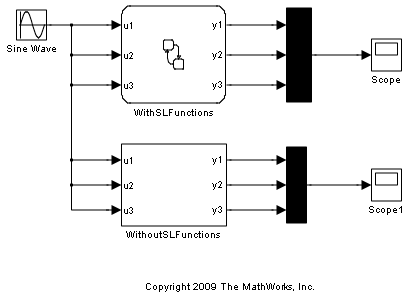
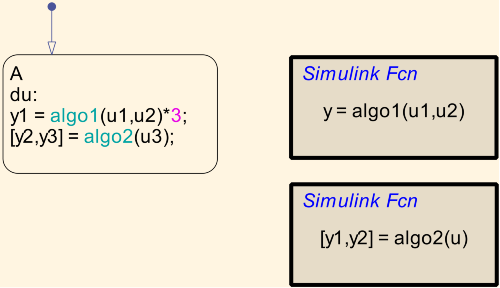
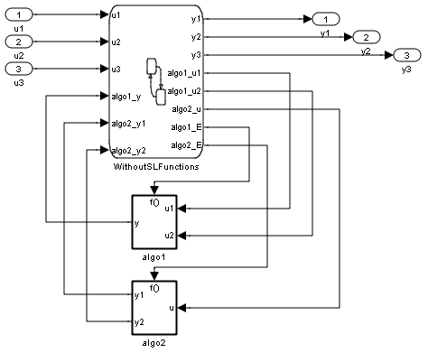
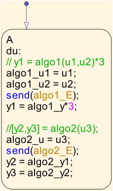

Stateflow® 内での Simulink® 関数の使用
このモデルでは、Stateflow 内での Simulink 関数の単純な使用方法を示します。R2008b から、グラフィカル関数、組み込み MATLAB™ 関数、Truth Table 関数などの他の関数オブジェクトと同じように、Stateflow で Simulink 関数呼び出しサブシステムを使用できます。
Simulink 関数の使用
WithSimulinkFunctions チャートでは、Simulink 関数 algo1() および algo2() を Stateflow 内で直接使用する方法を説明します。
次の点には、注意してください。
- 複数の出力構文を使用して、複数の入出力と Simulink サブシステムを通信させることができます。
- 標準的な Stateflow アクション言語構文を使用すると、大きい Stateflow 式内で Simulink 関数を直接使用できます。
Simulink 関数の使用なし
WithoutSimulinkFunctions チャートでは、前のリリースの Simulink 関数を使用せずに同様の機能を実現する方法を示します。
 次の点には、注意してください。
- Simulink サブシステムと通信するには、複数の関数呼び出し出力イベントを作成する必要があります。
- Simulink サブシステムから Stateflow チャートへ、手動で入出力を接続する必要があります。
- 式では、Simulink サブシステムから直接出力を使用することはできません。最初に対応する出力に send() 出力イベントを書き込み、次に、対応する入力から読み取る必要があります。
Simulink 関数使用の利点
関数呼び出し出力イベントを使用するのではなく、Stateflow で直接 Simulink 関数を使用することにはいくつかの利点があります。
- 結線が少ないため、エラーの発生が少なくなります。
- 標準的な Stateflow アクション言語構文を使用して、式内で Simulink 関数を直接使用できます。
- 設計階層は、Stateflow チャートにStateflow チャートが使用する Simulink サブシステムがあるとより明らかになります。